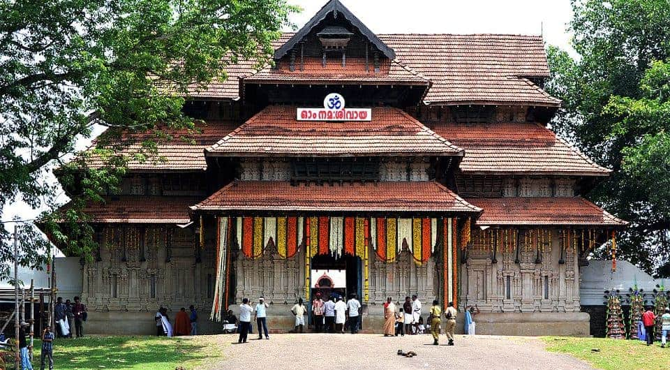
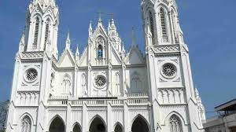

Thrissur (formerly Trichur) is a district of Kerala situated in the central part of that state. Spanning an area of about 3,032 km2 (1,171 sq mi), Thrissur district is home to over 9% of Kerala's population. Thrissur district is bordered by the districts of Palakkad and Malappuram to the north, and the districts of Ernakulam and Idukki to the south and Coimbatore to the east. The Arabian Sea lies to the west and Western Ghats stretches towards the east. Thrissur district was formed on 1 July 1949, with the headquarters at Thrissur City. Thrissur is known as the cultural capital of Kerala, and the land of Poorams. The district is known for its ancient temples, churches, and mosques. Thrissur Pooram is the most colourful temple festival in Kerala.
As you walk down the stone slabs that lead to the base of the Athirappilly waterfalls, a mysterious serenity overcomes you. It is Kerala's most famous and largest waterfall at over 80 ft high. The sight of the water crashing onto the ground leaves you with a sense of wonder at the sheer power and magnificence of nature. Located around 63 km from Thrissur district, it is a perennial picnic spot for people in the area and beyond. Its surrounding greenery is perfect for walks and picnics with loved ones. Lying at the entrance to the Sholayar forest ranges, it is a part of the Chalakudy River which calls the Western Ghats its home. Barely 5 km away is another family favourite, Vazhachal Waterfalls. These waterfalls became famous for not just their view but the endemic species found in the surrounding dense forests. Researchers have found four endangered species of the Hornbill here, the only place they thrive in the entire Western Ghats. Ornithologists attach great significance to this location and bird watchers can come across many rare and vibrant species in these parts.
An ancient temple of Kerala, the Vadakkunnathan Temple is also the oldest temple of the state dedicated to Lord Shiva. Following the architectural style of Kerala, the temple has monumental towers surrounding it. Talking about the inside of the temple, there are several mural paintings that depict various episodes from the Hindu Epic, Mahabharata. Thekkinkadu Maidan, which surrounds the temple from all sides is where the local festival of Thrissur Pooram is organized every year, granting this place an even more of spiritual importance.
The Dolours Basilica, or the Basilica of Our Lady of Dolours (as the full name goes), is a distinct building in the city of Thrissur. You can easily recognize this grand church from its white facade. Smack in the middle of a lush green valley, this basilica is known for narrating quite a number of stories of love and faith. Spread in an area of about 25,000 sq feet, Dolours Basilica is the third tallest church in Asia and the largest church in the country with double storeyed aisles.